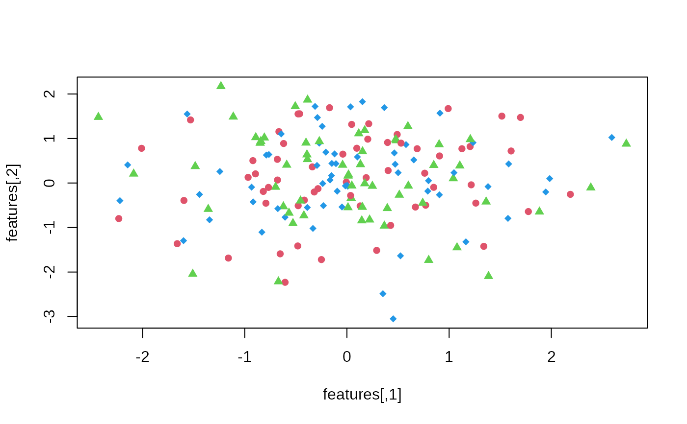

Perform anticlustering using the k-plus objective to maximize between-group similarity. This function implements the k-plus anticlustering method described in Papenberg (2023; <doi:10.31234/osf.io/7jw6v>).
kplus_anticlustering(
x,
K,
variance = TRUE,
skew = FALSE,
kurtosis = FALSE,
covariances = FALSE,
T = NULL,
standardize = TRUE,
...
)A feature matrix where rows correspond to elements and columns correspond to variables (a single numeric variable can be passed as a vector).
How many anticlusters should be created. Alternatively:
(a) A vector describing the size of each group, or (b) a vector
of length nrow(x) describing how elements are assigned
to anticlusters before the optimization starts.
Boolean: Should the k-plus objective include a term to maximizie between-group similarity with regard to the variance? (Default = TRUE)
Boolean: Should the k-plus objective include a term to maximizie between-group similarity with regard to skewness? (Default = FALSE)
Boolean: Should the k-plus objective include a term to maximizie between-group similarity with regard to kurtosis? (Default = FALSE)
Boolean: Should the k-plus objective include a term to maximizie between-group similarity with regard to covariance structure? (Default = FALSE)
Optional argument: An integer specifying how many distribution moments should be equalized between groups.
Boolean. If TRUE, the data is standardized through
a call to scale before the optimization starts.
Defaults to TRUE. See details.
Arguments passed down to anticlustering. All of the
arguments are supported except for objective.
This function implements the unweighted sum approach for k-plus anticlustering. Details are given in Papenberg (2023).
The optional argument T denotes the number of distribution
moments that are considered in the anticlustering process. For example,
T = 4 will lead to similar means, variances, skew and kurtosis.
For the first four moments, it is also possible to use the boolean
convenience arguments variance, skew and kurtosis; the
mean (the first moment) is always included and cannot be "turned off".
If the argument T is used, it overrides the arguments
variance, skew and kurtosis (corresponding to
the second, third and fourth moment), ignoring their values.
The standardization is applied to all original features and the
additional k-plus features that are appended to the data set in order
to optimize the k-plus criterion. When using standardization,
all criteria such as means, variances and skewness receive a comparable
weight during the optimization. It is usually recommended not
to change the default setting standardization = TRUE.
This function can use any arguments that are also possible in
anticlustering
(except for `objective` because the objective optimized here
is the k-plus objective; to use a different objective,
call anticlustering directly). Any arguments that are
not explicitly changed here (i.e., standardize = TRUE) receive the
default given in anticlustering
(e.g., `method = "exchange"`.)
Papenberg, M. (2023). k-plus Anticlustering: An Improved k-means Criterion for Maximizing Between-Group Similarity. Retrieved from psyarxiv.com/7jw6v
# Generate some data
N <- 180
M <- 4
features <- matrix(rnorm(N * M), ncol = M)
# standard k-plus anticlustering: optimize similarity with regard to mean and variance:
cl <- kplus_anticlustering(features, K = 3, method = "local-maximum")
mean_sd_tab(features, cl)
#> [,1] [,2] [,3] [,4]
#> 1 "-0.08 (1.03)" "-0.07 (1.09)" "-0.07 (0.99)" "-0.04 (0.99)"
#> 2 "-0.08 (1.04)" "-0.07 (1.10)" "-0.07 (0.99)" "-0.04 (0.99)"
#> 3 "-0.08 (1.04)" "-0.06 (1.09)" "-0.07 (0.98)" "-0.04 (0.98)"
# Visualize an anticlustering solution:
plot(features, col = palette()[2:4][cl], pch = c(16:18)[cl])

# Also optimize with regard to skewness and kurtosis
cl2 <- kplus_anticlustering(
features,
K = 3,
method = "local-maximum",
skew = TRUE,
kurtosis = TRUE
)
# The following two calls are equivalent:
init_clusters <- sample(rep_len(1:3, nrow(features)))
# 1.
x1 <- kplus_anticlustering(
features,
K = init_clusters,
variance = TRUE,
skew = TRUE
)
# 2.
x2 <- kplus_anticlustering(
features,
K = init_clusters,
T = 3
)
# Verify:
all(x1 == x2)
#> [1] TRUE